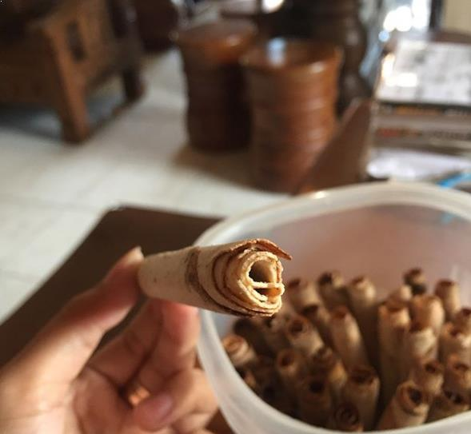
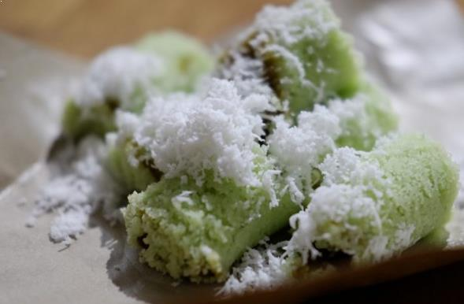
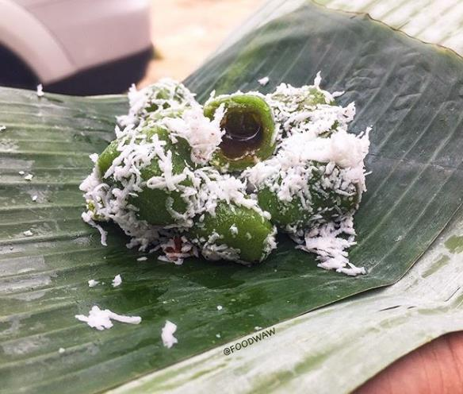
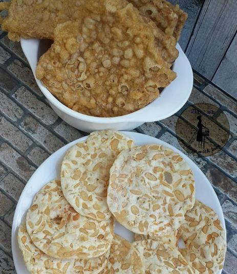
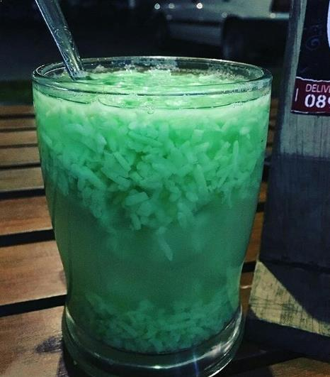
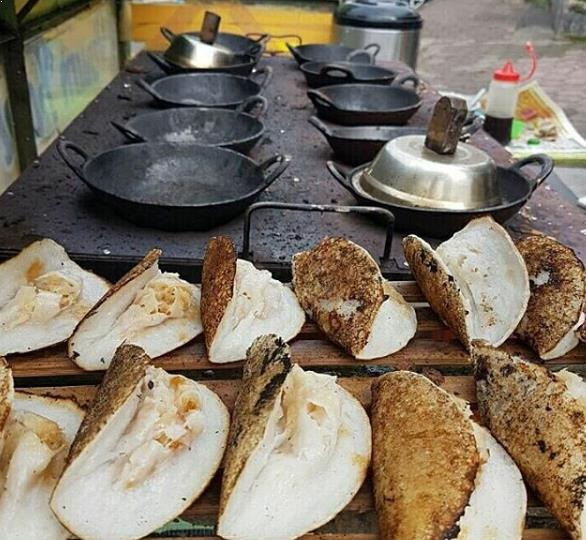
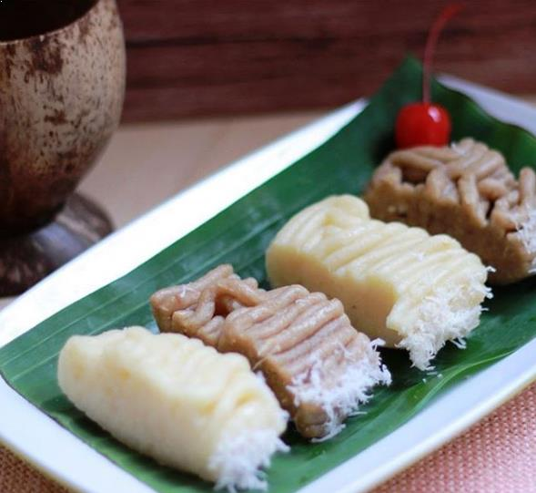
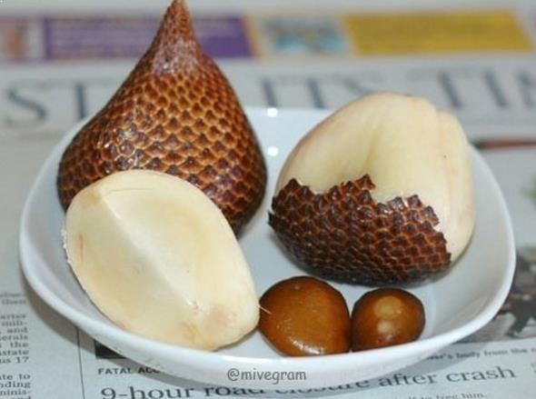
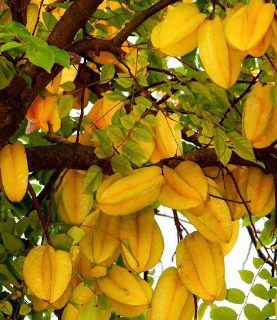
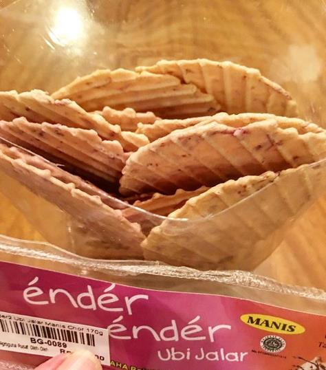

Kuliner Bojonegoro
Budaya masyarakat Bojonegoro dikenal cukup unik dan masih dengan teguh menjaga warisan nenek moyang. Salah satunya masih dipegang teguhnya budaya masyarakat Samin, yaitu suatu komunitas masyarakat yang masih teguh menjunjung tinggi ajaran dari nenek moyang Samin Surosentiko berupa keserhanaan, keterbukaan, keikhlasan, dan menjaga keseimbangan alam. Letak suku Samin tidak jauh dari Kota Bojonegoro, tepatnya di Dukuh Jepang, Desa Margomulyo, Kecamatan Margomulyo sekitar 60 kilometer sebelah barat daya Kota Bojonegoro.Selain adat budaya dan tradisinya yang masih dijunjung tinggi, wilayah yang mendapat julukan kota angling darmo ini juga mempunyai segudang tempat wisata Bojonegoro yang menunggu untuk dikunjungi. Nah, jika anda mempunyai waktu luang berkunjung ke Bojonegoro, tidak ada salahnya juga jika anda menikmati berbagai jajanan dan makanan khas Bojonegoro. Beberapa sajian kuliner khas Bojonegoro tersebut tentunya memiliki harga yang sangat murah serta pas dengan kantong kita semua. Langsung saja tanpa panjang lebar, berikut ulasan mengenai daftar makanan khas Bojonegoro yang harus dicoba.
Ledre
Putu
Klepon
Keripik Tempe
Wedang Tape
Serabi
Gethuk
Salak Wedi
Belimbing Ngringinrejo
Ender Ender
Peyek Bayam